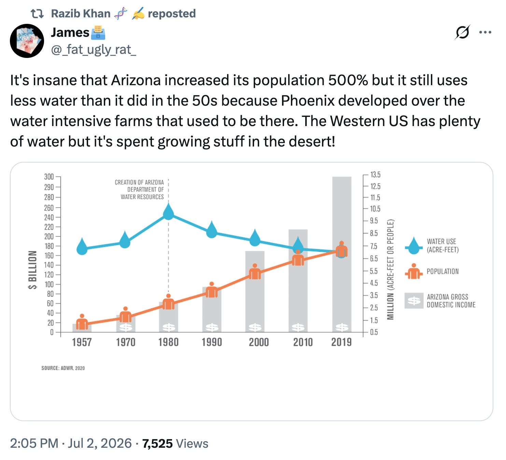
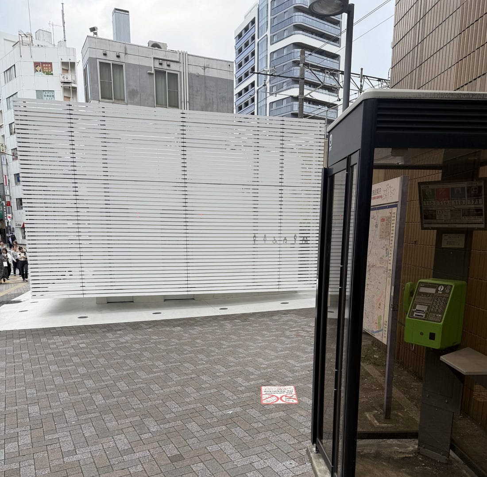
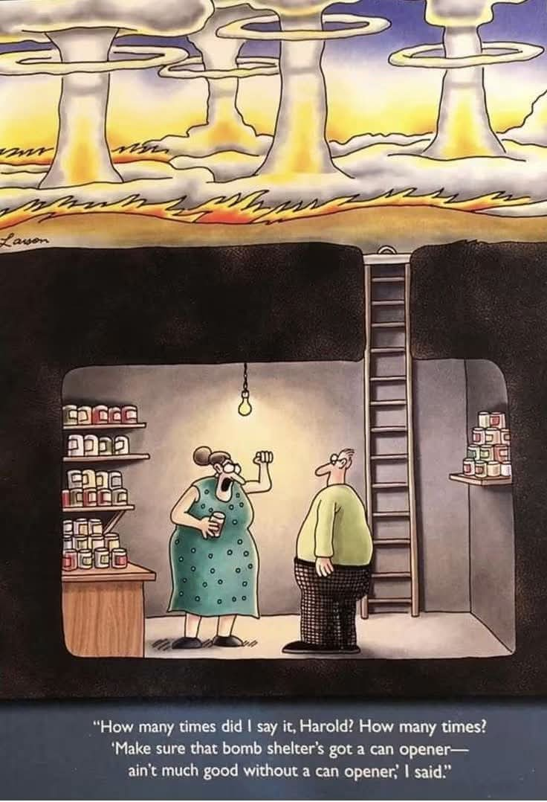

WEEKLY REMINDERS/ANNOUNCEMENTS – Eco 238, Week 12
Topics and Readings This Week: We are moving into the section on Externalities and covering the great Coase piece on the Problem of Social Costs.
Weekly Assignment: Your 12th assignment is posted,. You get to read a LEGENDARY paper, one that has spawned an entire field of economics, without an equation. Please do not shortchange yourself of this opportunity. Please pay attention to Week 11! We are requiring that all students complete and compete in the Week 11 Batsh!t Crazy Environmental Economics Idea of the Year Award competition.
Group Discussion/Interview Project: It is a good idea to stop by office hours sooner than later to discuss them.
TA Office Hours and Info
Look for an announcement from our Head TA Jingyao Wang Wu for an update on Office Hours and discussion session opportunities.
My Availability
I will not be available until Monday morning. Call Jingyao if there is a serious issue, and they will route communication to me. Feel free during the week to call or text.
Check out Rochester events, office hour times and locations, department information, and up to date news and job opportunities (as they come to me) visit us at tiny.cc/RizzoHours. I update my calendar weekly on that page, and include other sometimes useful information on it for you.
This Week at Rochester
https://rochesterrizzo.github.io/Rizzo-Hours/this-week-at-rochester/
Seven reasons to get out this week.
Thursday · AI & humanities: Open Panel on AI in Humanities Scholarship
12:30 PM · Humanities Center Conference Room D.
Friday · Contemporary music: Musica Nova
7:30 PM · Kilbourn Hall · Free with livestream.
Saturday · Theater: Becoming Curious
8 PM · Smith Theatre, Sloan PAC · Ticketed.
Sunday · Jazz: Arthur Satz Jazz Combos
7 PM · Lower Strong Auditorium · Free.
Monday · Big orchestra: Eastman School Symphony Orchestra
7:30 PM · Kodak Hall · Free with livestream.
Wednesday · Global campus: International Food Festival
5–7 PM · Feldman Ballroom · Free.
Thursday · Sonic history: Listening Through Soviet History
5–7 PM · Humanities Center Conference Room D.
Upcoming Special Events
SPRING 2027: Department of Economics McKenzie Lecture
Title: Coming in April
Who: …
Date: mid-to-late April
Time: …
Location: …
More Info: https://mckenzie-lecture-rochester.wintercow20.chatgpt.site/
Since 1986, Rochester’s graduate students have selected an outstanding economist to deliver the McKenzie Lecture and spend a day talking with students. Edward Prescott gave the first lecture; Robert Lucas followed. The roster now includes at least 19 Nobel laureates, including Gary Becker, Paul Krugman, Joseph Stiglitz, Alvin Roth, and Daron Acemoglu—many of whom visited years before receiving the prize. That is an extraordinary tradition to have here.
The lecture honors Lionel McKenzie, one of the architects of modern economics. His work established conditions under which prices can reconcile the separate decisions of consumers and producers across an entire economy. He independently proved the existence of competitive general equilibrium, publishing his 1954 paper before the celebrated Arrow–Debreu paper. There is a powerful case that he deserved to share the Nobel recognition later accorded that work. His contributions also extended to demand theory, welfare measurement, and economic growth.
McKenzie arrived at Rochester in 1957, founded our doctoral program, and recruited scholars including Ronald Jones, Stanley Engerman, and Robert Fogel. He helped build this department into an international center of economics; by 1995, its doctoral program ranked among the nation’s top ten. The lecture preserves his commitment to bringing ambitious students into direct conversation with outstanding economists. Read more about Lionel, the department he built, and the history of the McKenzie Lecture.
Politics and Markets Project
Title: Coming in April
Some Items that Caught Our Attention
Paging Dr. Evil. Paging Dr. Evil. All We Wanted was a Frickin’ Laser Beam! Norway now has more than 2,000 underwater AI laser robots shooting lice off its salmon they're made by a company called Stingray, and they already guard more than 50 million salmon and trout 24/7 the reason is sea lice, tiny parasites that latch onto salmon and feed on them as few as 11 can kill a small fish, and one pen can hold 150,000 salmon the usual fix is pumping the fish out and blasting them with warm water or water jets to knock the lice off but the handling is so rough that Norway's fish health report ranks it the top cause of death in full-grown farmed salmon so instead, Stingray puts a robot inside the pen that hunts lice one at a time, all day: > two cameras watch every salmon that swims past > AI checks two frames to make sure it's really a louse > then a green laser fires from up to 2 meters away > the salmon's scales reflect the beam, so the fish swims off fine and the louse is dead we now live in a world where AI lasers do pest control on your dinner lmao
Rocky Mountain High: ~ half of hikers use weed.
Data Centers get put in places with FLAT supply curves
Judging an Electric Bill by Its Cover? “Judging AI by its electricity consumption alone is like judging a factory by its utility bill while ignoring everything it produces. Across 220 professional tasks, one model averaged an estimated $72 in net work value using four laptop-hours of energy—roughly 2.4 cents of electricity at 20 cents per kilowatt-hour. A smaller model delivered 2.5 times more value per unit of energy: the economic objective is to get the most valuable work from our scarce resources, and counting consumption without counting production tells us nothing about whether those resources were well spent.”
Barn Owl Screeches are EERIE! Still a happy success story in NYC, high drama, check it out.
Climate Change Won’t Kill Us, but “they” won’t tell you that: “A remarkable new NBER paper finds that climate change may reduce fisheries revenues by only 7–8% by 2100, with worst-case annual losses of roughly €800 million across the fisheries studied. This is astonishingly GOOD NEWS—a surprisingly small economic impact over 75 years, even before fully accounting for adaptation, innovation, and economic growth. Yet instead of celebrating how remarkably manageable these estimated damages are, the researchers wrap their findings in the familiar language of crisis and urgent action. This is what drives me crazy about climate research: genuinely good news gets packaged as catastrophe, and the public is left with advocacy masquerading as objective science.”
Ding Dong, the Climate Witch Takes Another Hit: “The American chestnut used to be one of the most common trees in Eastern US woods. In the early 1900s, almost all of them died from an imported chestnut blight. Earlier this summer, the USDA approved a genetically-engineered American chestnut strain that might be able to survive the blight and return to forests, although there’s some sort of controversy over them using the wrong strain. The whole thing is very aesthetic/romantic, but @pfau also claims that “If this works, it’s also a massive win for the climate. American chestnuts grow huge and grow fast, sequestering carbon”
Bill Gates, Ding Dong the Climate Witch is Dead: If we’re against climate change because of how it will hurt poor people in developing countries, we need to take into account that giving those people standard health + development aid seems more cost-effective than most climate spending.
The most promising and cost-effective strategy for fighting climate change is accelerating development of environmentally-friendly technologies until they can outcompete dirty technologies on the open market, and so far this strategy is going well (most notably solar power, but also low-carbon cement and steel, and lots of other things most people don’t hear about).
In the past ten years, mostly through strategies like this, we’ve cut projected emissions by over 40% (!)
This isn’t a call to sit around doing nothing; incubating new green technologies that outcompete dirty technologies is hard, and we need to keep doing this hard thing
Either You are Using AI, or AI is Using You. A MUST read.
I Suppose Idaho is Now a Dangerous Hellscape? In recent years, Idaho has achieved one of the most dramatic state-level reductions in regulation ever. Instead of assuming old regulations should remain on the books, it made agencies justify the ones they wanted to keep. Since 2019, the state has eliminated roughly half of its regulatory code
Good Climate Economics – Look at What the Prices Tell Us: Using fine-grained data on 465,000 Florida home sales over twelve years and semiparametric machine learning methods, we examine how home prices respond to weather-related risk factors. … we find that home prices are negatively related to property-level expected weather losses derived from catastrophe models, insurance premiums, and exposure to recent hurricanes, but with notably different magnitudes. … Recent hurricane exposure has only a marginal effect on house prices, suggesting that hurricane risk is well-understood in Florida so that realized weather events convey little new information about future losses.
In the Weeds: “The drafters had national ambitions, seeing their law as a “demonstration project” for how to implement progressive policy. “If we can do this with weed, what can we do with housing?” asked Jason Starr, who had helped write the law while serving as an aide to the governor.” The law decriminalized marijuana and gave jailed blacks and hispanics inside access to the first retail licenses. What happened? “At the core of this project was a high-stakes bet: that the ideals of racial justice could meet the realities of capitalism. As it happened, capitalism found a way to go first, in Bill’s words — or, in Joanne’s, “a loophole.”
Without a criminal record, neither of them qualified for the state’s first licenses to sell marijuana. While Bill waited his turn to apply, Joanne bought her way in early. After opening a store in Manhattan, she found former convicts who had landed the first licenses and paid them to help her open three more stores, including one in Hudson.”
We discussed previously that the size of government can be boiled down to two-ish concepts that are negatively correlated with one another. The first is government consumption, transfers and subsidies, and the top marginal tax rate. Call that “the welfare state.” The second is government investment and government ownership over the economy. Call that “socialism.” State capacity is positively correlated with the welfare state and negatively correlated with socialism. Yes, let me repeat: across countries, the welfare state is negatively correlated with socialism.
* * * * *
WINTERCOW’S MOOING: Crabpotism and Antisocial Punishment. Creepy voice podcast here; Need some time to make it sound better, suggestions welcome.
CHART(S) OF THE WEEK: Water in the desert

PHOTO OF THE WEEK:
Despite my disappointing vacation, I still view Tokyo as my favorite city. Indeed I view it as the absolute peak of human civilization. Even if in some sense places like Oslo and Zurich are “better”, nowhere else on Earth has 35 million people living in such harmony. Here’s a picture of one of the architect designed public toilets. The square also has a functioning phone both, a tiny police station, and a separated smoking area. And Tokyo has thousands of such conveniences all within easy walking distance. Even if 90% of Tokyo’s modern architecture is bland, in absolute terms the quantity of elegantly designed modern buildings is still vast. Tokyo is a good rebuttal to critics who trash modern architecture.” That was Chris Arnade in Walking the World

VIDEO/DOCUMENTARY/BOOK/CARTOON, ETC OF THE WEEK: O-Ring problems

QUOTE
"It's what you learn after you know it all that counts."
John Wooden